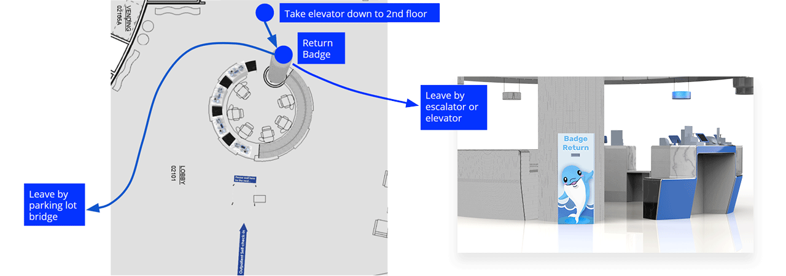

overview
The Challenege
Redesigning the Welcome Experience for Lurie Children’s Hospital
This project seeks to understand multiple stakeholder needs and explore new service opportunities to be considered in the redesign of the reception space at Lurie Children’s Hospital.
The Problem
The long waiting line increased patient's and consierge's stress.
As designers, we should consider all of the primary stakeholder groups, design new touchpoints as well as do testing and prototyping based on in-context research.
The Solution
https://www.carol-cheng.com/fitjourneyAn animation
An Outpatient Family Express Check-in Lane
on Lurie Children Hospital Chicago Campus Second Floor

| Design Sprints Accomplishments
We run 4 two-weeks design sprints.

| Deliverables
Qualitative Research: User Interviews, Observation
Quantitative Research: Online Survey Design, Distribution and Analysis
Ideation: Business Origami, User Journey Map, Service Blueprint
Validation: Prototyping, In-context testing, 3D modeling and rendering
Design Research
What did us research?
Primary Research
To understand the current check-in service applications
Secondary Research
To understand the current tensions and pain points

Insights
Stakeholders map
Insight 1
Persona
First time users
Returned users
Insight 1
Current journey map
| Current Check-in Journey Map
Insight 2
Empathy map
Concierge's pain points
Pain Points

Opportunity Area
Why is there a long check-in waiting line?
A large number of families and visitors
Unshrinkable procedures
Single lane option
So, a feasible solution is creating another check-in lane.
How to create a new check-in lane that can successfully shorten the line in the other lane?
Another check in the lane for a specific group of people.

Outpatient families take 70-80% number of daily appointments at Lurie. Their check-in process without a background which needs to check in another separate system check is relatively simple so that cost less efforts. And the visit instruction for them is highly-standardized.
Ideation
Probelm Statement
How to encourage outpatient families to use the second lane?
Are outpatient families technically feasible for using machine interaction to check in?
Solution explporation
Business Origami
Pre-check-in via web or mobile app: Airlines
Ipad check-in kiosk: Sherily Ryan center application
QR code for express check-in: Amazon package return
Quick testing and validation
Paper prototype and testing
What we learned?
Online survey
What we learned?
Potential Solution
A kiosk that allows patient family check-in by using Ipad with concierge's help when is neccessary.
Do outpatient families like machine interaction?
Idea testing with outpatient families through interceptions around Lurie
Service Design
| Target user
Who are going to use self-check-in kiosk?
They are outpatient families. Usually, they may need to carry a large amount of items with a large footprint.
And we expect they would feel comfortable with using machine and familiar with tablet interactions.
Lurie’s Position & Design Principles
As we know, Luire has its promise, "All, for your one," which is impressed us. Correspondingly, from our research, we also extracted several design principles instructed our experience design.
| Service Blueprint
OA
Patient Experience Design
#1 Enter and wait
Touchpoint: Indicators and signs
#2 Check-in
Touchpoint: Self-check-in Kiosk table
Touchpoint: Ipad check-in system

Detailed UX/UI Design
User flow
User interface design

Step 1: Input Information
by scanning QR code
1. Provide scanning instruction
2. Show the progress while scanning
Step 2: Input Information
Back-up plan
by typing manually
1. Reserve keyboard space
2. Show error and blank status on the same page without jumping or popup


Step 3: Confirm Appointment
1. Highlight the appointment information
2. Provide the “Not me” option and call concierge directly
Step 4: Print Badge
by Fewer efforts
1. Choose the number of badges instead of typing
2. Provide picture and words instruction


Step 5: Tips of Reinforcement
1. Some necessary instruction but not too much
2. Inform them to return badge at the starting point of their visit
3. Provide a standalone page for instructions to emphasize
Step 6: Validate Parking Ticket
Automatically
1. Build into the check-in process


Step 7: Finish Check-in
Friendly and noticeable
1. Countdown in 15s to finish the current check-in process
2. Calling for the next light will be turned on automatically after finishing the check-in process
Exceptional: Call concierge for help
1. Accessible and noticeable
2. Coordinated indicator light

#3 Finish check-in and go upstairs
Touchpoint: Self-screening station

#4 Leave hospital
Touchpoint: Badge return box
Outcomes
Achieved Initial Goal
Not to replace concierges, but to give them more irreplaceable jobs, like
Handling system errors and exceptional cases
Helping patient families who encounter problems during self-check-in
Impact
A desirable check-in option for outpatient families
Faster
Fewer people waiting in the line since outpatient only
No need for concierges to identify patient family’s purpose
Fewer mistakes and higher efficiency
One concierge can take care of four families at a time
Online Survey Results for validation
- Majority of response want kiosk
- What are their other concerns?
1. Germ
2. Park ticket validation
3. 1st-time instruction
4. Like human interaction